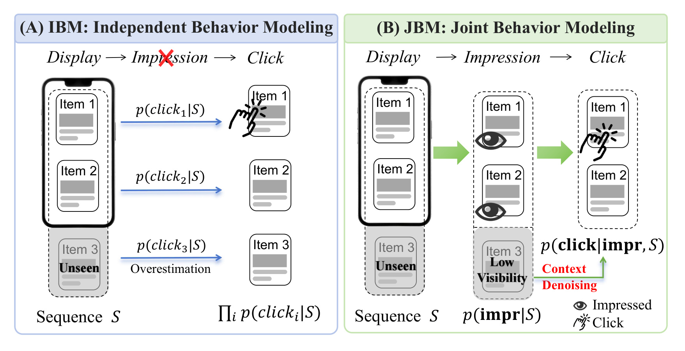
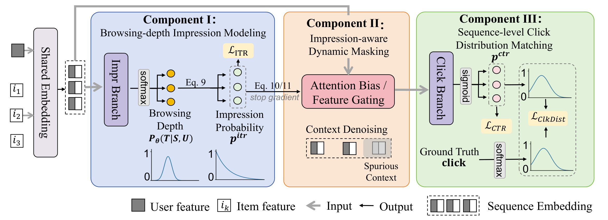
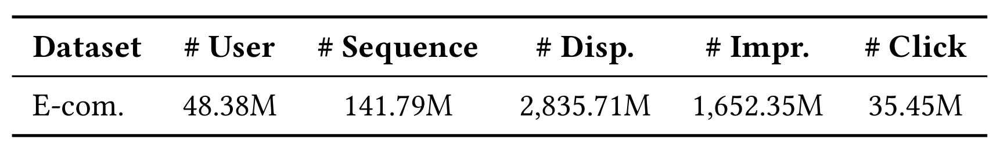
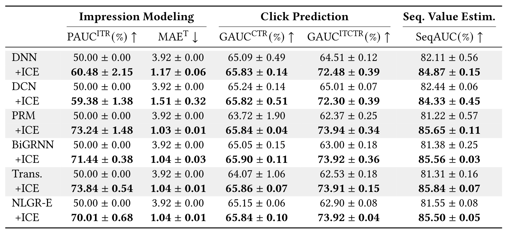
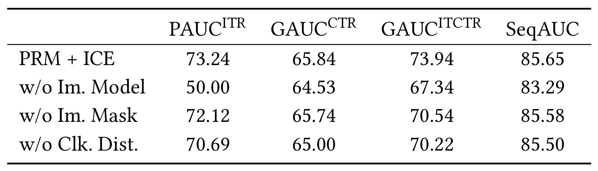
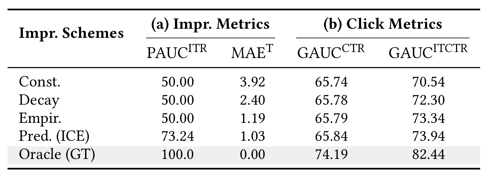
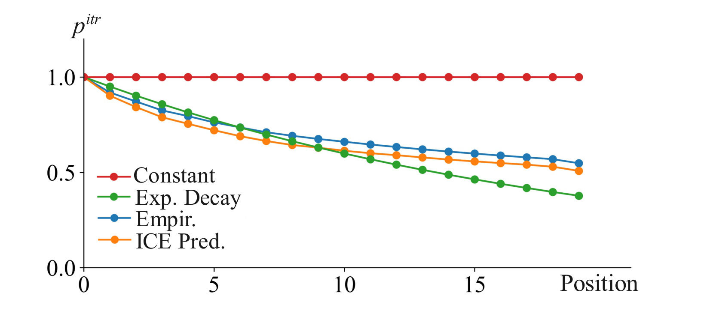
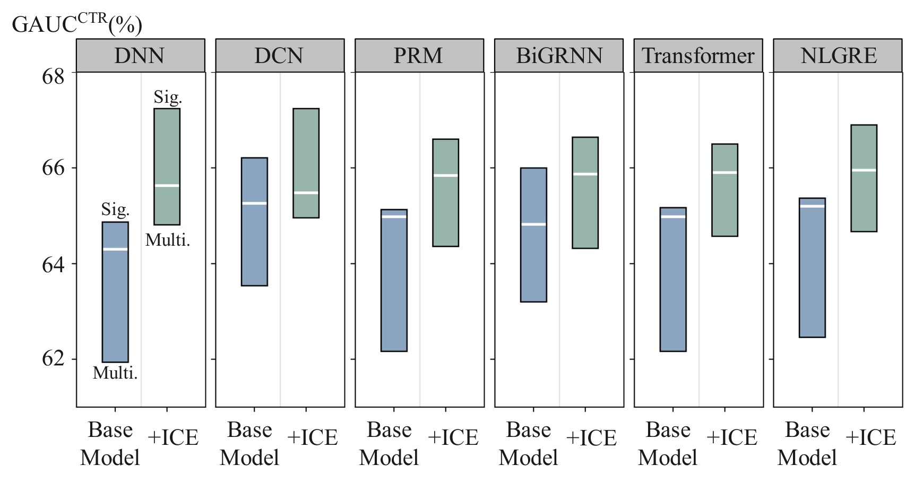

ICE：沿浏览过程估计整列重排的价值
阿里巴巴淘宝天猫集团与西安交通大学的 Jiayi Zhang、Jingxin Hai、Zhenjia Ma 等研究了工业推荐系统的整列重排评估。ICE 把用户是否滑到某位置、看到后是否点击，以及多次点击在一列里怎样分布放进同一个评估器。论文于 2026 年 11 月 5 日提交预印本，收入 CIKM 2026 会议论文集。作者原文未提供经核验的独立实现。 arXiv:2611.07591
系统一次生成一整列商品，用户往往只浏览前面一段。逐项估计点击容易把从未进入视野的尾部当成已经具备点击机会，同时遗漏同一列商品对有限注意力和购买意图的竞争，进而改变候选列表之间的取舍。
1. 背景和问题
1.1 重排评估器决定哪个排列真正交付
电商推荐常把召回、排序、重排做成级联。召回解决从很大的商品库取出一批可能相关的候选，排序阶段为候选估计个体价值，重排阶段则要把它们放到有限的展示位置里。同一批候选可以拼出多份有效列表，前几位商品的类别组合、相似程度、价格带和用户进入该页的意图共同决定每份列表的价值。排序阶段靠前的候选有理由留在候选池里，但相邻两个都是同款耳机时，第二项给用户增加多少选择，取决于第一项和周围内容已经提供了什么。反过来，一件独立得分一般的商品可能补上整列缺少的用途，放在合适的位置就有额外价值。
论文采用已有的生成器与评估器分工。生成器按各自策略给出多个有序序列，评估器把用户和每个序列作为输入，估计其整体效用，实际投放取分数最高者。它回避了边打单品分边重排的一个困难。若打分所用的邻居来自上一版排序，移动候选之后，原有上下文随之变了，上一版分数未必仍适用。整列评估可以针对每份已经排好的候选重新打分，也能让生成器保留商品约束和探索策略。这个分工让问题更清晰。候选集合没提出的顺序，任何评估器都选不到。若生成器已经有两个可投放但结构不同的排列，决定其优劣的主要是评估器能否把预测值与实际可见的页面内容对应起来。
一个容易误解的地方是论文所谓独立行为建模。已有的序列模型可以读取同列其他商品，甚至用双向注意力让每个位置访问完整序列。这仍可以配上彼此独立的点击监督，每个位置都用自己的二值标签优化，预测出来的逐项概率也可以被简单加总。表示层能看到邻居，与目标层能否区分曝光门槛、点击竞争和用户后续行为，是两件事。ICE 的对照主干因此既有逐项感知的网络，也包括能编码上下文的重排模型。后者在比较中同样存在增益，说明作者检验的是概率口径和训练约束变化后能否改善评估，观察范围比单纯换一个序列骨干更具体。
1.2 展示之后还有两道关口
作者将服务端列表里的展示和用户实际看见的曝光分开。这里的展示是被排进下发列表，曝光是该位置被浏览到并符合日志定义的可见条件，点击发生在后者之后。如果一屏只容纳几项，用户滑到第三项时离开，排在第十五项的商品虽然参加整列打分，实际没得到用户决策机会。将所有尾部未点击都当作用户看过后拒绝，会把曝光机会和内容偏好混进同一个标签。即使某个模型在旧策略上利用固定位置学到了平均掉队规律，换到一个前几位内容不同的候选列表后，用户能滑到多深也可能变化。此时沿用历史平均位置折扣会掩盖请求之间的差异。

左侧的手机只覆盖前两项，第三项仍作为候选序列的一部分送入评估。蓝箭头表示三项各自得到一个点击预测，图中刻意划去曝光中间节点，突出第三项可能因条件未区分而高估。右侧先在中间列把有眼睛标记的第一、第二项和可见机会较低的第三项分开，再在第三列说明只有已经具备曝光机会的项才可能得到点击。图中的红色去噪提示指向另一个问题。第三项可能被模型用来解释第一项和第二项的点击倾向，即使用户压根未看见它。把其上下文贡献降下来，与降低第三项自身的端到端点击估计是两个动作。这张图说明了论文打算分离的两个信号，没有用三件商品演示一个真实用户的点击提升。实际推理仍得估计曝光概率，因为还未投放的候选序列没有真实曝光标签。右图中低可见位置也会保留一定权重，以反映有些用户确实会滑到它附近。
第二道关口是曝光后点击依赖。比如两件相似商品都被用户看见，用户可能比较之后只点其一，也可能先打开第一件再返回浏览下一件。两次点击有何关系取决于需求、前序行为和同列候选，不能由共同出现直接判断。若模型分开看每个位置的二值标签，可能给两件商品同时估出很高的点击概率，而训练目标并未显式约束这些分数如何在整列里分配。用一个全列归一化目标加入竞争信号，是作者把这种依赖纳入既有结构的办法。它提供的是分配约束，对某次点击究竟抑制还是激发之后点击，仍须有更细的日志或干预才能识别。浏览会话有多次成功点击也很正常，因此训练中应保留各曝光位的二值点击损失来学习总体水平。
1.3 评价问题取决于使用哪类日志
在本论文的二十项长度设置下，一个请求关联一串展示记录，再对应曝光与点击向量。将这三个状态写成不同字段后，分析者可以比较相同位置、不同请求的可见机会，再比较同样已经曝光、不同商品的兴趣差异。若只记录客户端曝光且省略下发列表，未曝光位置的分母就无法重建。曝光标签由客户端采集，若传感条件、停留阈值或渲染版本随端变化，模型可能把埋点差异学成浏览行为。论文没有披露可见百分比、停留毫秒或多列页面的判定规则，复现时首先需要对齐这些定义，再谈迁移参数或指标。
评估器面对的是几个待选序列，日志通常只观测真实选中的一个。离线可以计算已发生事件的序列级排序一致性，无法同时观察同一个人、同一时刻、所有未投放排列的真实点击。即使跨日志列表的预测效用排序很好，它也可能部分利用不同用户活跃度或请求难度，尚不能独立证明同请求下交换商品位置的效果。论文同时给了保留生成器的线上对照，使列表级离线指标和部署效果可以分别讨论。把这两组证据连起来读，离线解释部件改变了哪些预测，线上衡量整套评估器在一个真实策略中能否改变交付结果。
本研究最贴近需要比较整列方案的推荐入口，尤其是浏览深度随会话差异很大的页面。在普通单项打分、首屏静态广告位或用户会横跳的页面上，物理约束不同，需要重新定义何为浏览边界。对于用生成模型出整列的系统，也可以借它检验奖励究竟来自服务端潜在内容还是客户端实际可能消费的内容。论文只在既有生成器上评估这套分工，使用 ICE 训练生成器仍是作者提出的后续方向，策略反馈、奖励偏差和新序列覆盖都有待测量。
2. 方法
2.1 行为联合建模与列表效用
ICE 从一个候选列表和用户上下文出发，目标是得到该列表的期望行为效用。列表固定后，实际能看到的范围、会点几项仍有随机性。点击总量、按单品权重加总的价值以及其他业务效用都可以作为行为结果的函数。由预测的行为分布取期望后，评估器才能在尚无真实标签时对候选打分。
符号解释：$S$ 为生成器提出的有序列表，$U$ 是用户及请求上下文，$\mathbf b$ 是各位置的行为向量，$p$ 为条件行为分布，$h$ 将实际曝光、点击等结果映射到效用，$\widehat R$ 是投放前的预测期望。改变候选排序会改变行为分布，因而即便候选集合相同，列表分数也可不同。
符号解释：$L$ 是列表长度，$i_k$ 是第 $k$ 个位置的商品，$b_k$ 是该位置行为，$\mathbf b_{<k}$ 表示此前位置的行为。$\mathbf i$ 和 $\mathbf c$ 分别表示二值曝光与点击向量。第一行说明逐项近似仍可读取整个静态列表，第二行给出联合分布按位置条件展开的视角，第三行按事件类型分解。实际架构通过曝光尾概率、掩码和跨位置目标近似这些依赖，并未在推理中逐位置采样已发生的点击，也没有显式求出整条点击向量的精确联合分布。理解这一层次可避免把条件分解误读为线上已知未来行为。
2.2 浏览深度与曝光概率
共享嵌入把用户和逐位置商品特征变成序列表示，曝光分支以此为输入，先给出最后到达位置的分类分布。每个位置的可见性随后由该分布推导，同一个请求的所有位置共享一个一致的退出边界。训练中二值曝光标签来自实际日志，推理时同一个用户的不同列表可以得到不同的深度分布。

从图最左侧进入的是用户特征和有序商品特征，经过共享嵌入后向上方的曝光分支与后续的点击路径分流。蓝色区域的首个软最大值层输出退出深度的类别概率，等式九沿深度做尾部累积，才得到每一项的可见概率。图下方用一条有峰的深度分布和一条逐渐下降的曝光曲线表示两者形状不同。曝光损失直接监督后一组概率。橙色区域接收嵌入和曝光置信度，使用注意力偏置或特征门对可能没看见的商品降权。箭头旁标明停止梯度，意味着点击任务沿这条连接不能改写曝光分支的概率，但两任务仍通过共享嵌入发生耦合。右侧点击分支一路用逐位置逻辑函数估计已曝光条件下的点击倾向，实际已曝光位置才参加对应的二值监督。另一路从点击分数形成全列分配，用归一化的实际点击向量约束。图中真实点击侧用软最大值方框做简写，计算应依正文第四点三节的明确规则，有点击时按点击总数归一化，零点击时设均匀目标。两条点击监督分别处理绝对概率和列表内相对分配，避免将所有曝光机会不高的项直接当成兴趣负样本。推理时不再需要真实行为标签，仍要顺序计算曝光和点击两个分支，并对每个候选逐位置合成期望价值。原图没有逐位置反馈回路，因此也不能从这幅架构图推断系统会拿已经发生的点击更新同一次重排决策。若只实现图中蓝色分支并将曝光乘到末端，可以检验机会校正的独立作用，图中后续两条训练连接则负责检验低可见上下文和点击分配能否再提供增益。
符号解释：$T$ 为离开前最后到达的位置，$t$ 是它的候选取值，$\theta$ 是分支参数，$p_k^{\rm itr}$ 为第 $k$ 位曝光概率。相邻两位之差恰好是停在较前位置的概率，因而理论上保证非递增。$T$ 的支持集从一开始，首位在该公式下恒为一。没有任何曝光的请求、可跳过某个位置的多列界面或客户端漏报可能不满足此前提。不能仅凭论文的切分说明推断零曝光请求已被特意过滤，接入前应验证日志支持范围。把逐位置曝光约束成浏览深度的尾概率，可以保证同一列表中后位的可见机会不会高于前位。
2.3 曝光感知动态掩码
曝光信号一方面参与列表的最终打分，另一方面先介入点击分支的上下文编码。低可见位置即使仍在输入列表里，也会因概率较小而降低参与交互的权重。论文给了两条实现路径。自注意力主干把位置对的曝光乘积变成对数偏置，和注意力原始打分一起进入归一化。非注意力主干直接对各位置的表示乘一个插值门。两条路径都对传入的曝光信号停止梯度，曝光头主要跟随其日志监督，避免点击梯度沿门直接把低曝光预测改成更有利于点击分类的数值。
符号解释：$M_{ab}$ 是查询位置 $a$ 与键位置 $b$ 的可见置信度乘积，$Q,K,V$ 是查询、键、值，$d$ 为注意力缩放所用维度，$\varepsilon$ 稳定对数。按照公式分析，当稳定项可忽略且查询位置概率为正时，$\log p_a^{\rm itr}$ 在同一行是常数，行归一化会抵消这部分，主要剩键侧曝光带来的相对权重变化。该点是对公式的推导，论文没有独立展示其实际内核如何实现。不能据这个乘积直接宣称低曝光查询位置的整行输出幅度也按其概率同比下降。
符号解释：$h_k$ 是第 $k$ 位的上下文表示，$\widetilde h_k$ 为门控后的向量，$\alpha$ 控制强度。$\alpha=0$ 时保留原表示，$\alpha=1$ 时直接乘曝光概率，文中离线对照统一采用后一配置。若曝光低估真实能被看到的商品，掩码同时会抑制有用的对比信号。工程上仍需区分训练可用真实曝光的诊断和线上可用预测曝光的正常链路，否则会把后验信息误接到投放前预测。
2.4 点击分布与联合训练
给定预测可见性和经门控的上下文，点击分支估计已看到时是否点击，并从 logits 形成全列分配。观察到多次点击时，被点击的位置共享目标质量，其他位置在该分布的直接质量为零。全列没有点击时，论文采用均匀分布作为无偏好目标。这会约束各位相对分配趋平，但并不单独代表零点击概率。后者主要来自二值点击目标和曝光机会。
符号解释：$\mathbf z_S$ 是同一候选各位置的点击 logits，$\tau$ 为温度，$\mathbf c_S$ 是实际点击二值向量，$\mathbf y_S$ 是分配监督，$\widehat{\mathbf p}_S$ 为预测分配，$D_{\rm KL}$ 为目标到预测的散度。给某位增加质量会压缩其他位的比例空间，因此这个损失可以增加相对竞争压力。它把一次和多次点击分别归一到总量一，点击数量信息需要通过其他项来保留。
符号解释：$i_k^{\rm obs}$ 是日志曝光标签，$p_k^{\rm ctr}$ 代表给定已曝光的点击概率，$\lambda$ 为分布损失的权重。曝光损失读取展示列表所有位置，点击损失仅在确实曝光的位置计算。论文令 $\tau=1$、$\lambda=20$ 来对齐损失尺度。上线前无真实曝光向量，因此用预测曝光而非日志标签作权重。共享嵌入仍受各目标共同训练，停止梯度局限于掩码连接。
符号解释：$\widehat p_k^{\rm itctr}$ 表示从被放入列表到点击的端到端预测，$w_k$ 为该位置商品的业务权重。全设为一得到预计总点击，按预测购买价值或出价加权可改成相应代理效用。列表候选取预测值最高者。因为期望对可加项可以求和，这里不需要在推理时逐条模拟用户路径。若效用含至少一击、两次同类点击饱和等不可加事件，直接套此式可能无法表达目标，还得定义合适的联合事件模型。
3. 实验结果
3.1 日志与评价口径
作者用工业电商重排日志，列表固定二十项，每个位置含实际曝光及点击标签。前六天训练，第七天测试。基线包括 DNN、DCN、PRM、BiGRNN、Transformer 和 NLGR-E，分别代表静态打分和不同上下文编码主干。统一的离线参数让研究能在同一日志及指标上比较各主干的成对变化，但没有公开原始样本和训练服务，无法外部逐条回放。

表的同一行依次给用户、序列、展示、曝光和点击数量，M 均表示百万。四千八百三十八万用户产生约一点四二亿条列表，总计约二十八点三六亿个展示位置，约十六点五二亿个满足曝光记录，点击约三千五百四十五万次。用表内四舍五入后的合计数计算，曝光除以展示约为百分之五十八点二七，点击除以曝光约为百分之二点一五，点击除以展示约为百分之一点二五。后两者使用同一个点击分子，分母分别是可见位置和服务端展示位置，不能互换。约四成展示位没有真实曝光，这让曝光建模有空间，不过合计无法说明未曝光到底来自浏览退出、采集条件还是其他页面差异。表中的行也不等于在线对照试验样本，用户数和流量比例不应拿来估算线上统计功效。对有条件曝光日志的工程团队，这张表首先提示要验证分母能否按同一列表和同一窗口对齐，其次才是比三个率的变化。各列汇总还无法说明重复浏览、用户高活跃度和尾部位置各自贡献了多少点击。
符号解释：$\mathcal D$ 是日志样本，三个 $N$ 分别是在同一统计范围内聚合的曝光、展示和点击数。聚合率与模型逐位置预测对应不同粒度。两项点击 GAUC 按用户分组后加权汇总，一个仅使用曝光样本的条件点击概率，另一个使用所有展示位置的端到端概率。PAUC 在同一位置内对曝光做 AUC，再按该位置曝光样本数加权，因此全体请求同一位置输出相同分数时，无法靠位置先验获得区分能力。深度 MAE 比较预测期望位置与日志最后一次曝光位置，误差单位为位置数。
SeqAUC 以真实总点击有严格大小关系的两条测试列表构成有序对，预测顺序正确记一分，相同记半分，反向记零分。论文口径是整个测试集形成的有序对，未限定在同请求、同用户或同候选集合内。这个指标衡量估计值和已观测效用的排序一致性，仍可能含用户活跃度和会话类型信号。离线设每个位置价值权重为一，因此该列与实验中的收入指标各自回答不同问题。
3.2 六种主干的配对结果
无曝光分支的对照按照论文规定把曝光预测代为一。这样处理对 PAUC 与深度误差产生固定分数，报告增益时应把这种常数基线和实际训练过的曝光模型分开。真正影响评估器可用性的另三列分别覆盖已曝光点击、全展示点击和整列总点击预测，表中的跨主干比较在相同日志上重复五次。

表中六组均为同一主干接入前后配对，曝光、点击和列表价值三块列头之下各有对应指标，箭头只有深度绝对误差要求越小越好。Transformer 的展示点击 GAUC 从百分之六十二点五三升至七十三点九一，差十一点三八个百分点，已曝光条件的点击 GAUC 从六十四点零七升至六十五点八六，只差一点七九个百分点。序列 AUC 从八十一点三一升至八十五点八四，差四点五三个百分点。对照曝光恒一后，端到端点击分数退化成原点击分数，因此更大的端到端增量符合恢复曝光项的预期。PRM 同样给出六十二点三七至七十三点九四的展示点击 GAUC 变化，DCN 则为六十五点零一至七十二点三零，说明共同方向下幅度随主干而变。最小的序列 AUC 增量是 DCN 的一点八九个百分点，最大的为 Transformer 的四点五三个百分点。Transformer 接入后曝光位置 AUC 与序列 AUC 的点估计居前，但 PRM 的展示点击 GAUC 点估计略高，BiGRNN 的已曝光点击 GAUC 点估计最高。不能仅凭同一表的不同列挑一个主干称为全指标领先。数值后的正负项是五次运行的标准差，不能当线上置信区间，也不足以证明几个接入模型之间百分之零点零几的差距有统计意义。结构层面，强序列主干仍有收益，支持改变建模口径具有价值，实际投放的收益大小则需要线上对照另估。尤其应注意基线的条件点击与展示点击 GAUC 即使分数列来自同一个预测，样本集合仍不同。前者仅看曝光位，后者带入曝光前失去机会的展示位。两列绝对数值之间的距离不能解释成曝光头独自改善了多少用户兴趣预测。若关注是否选中了更好排列，优先看末列的成对变化。
单独考察曝光时，接入后 PAUC 从约五十九到七十四不等，深度误差约一点零三至一点五一。常数曝光对照的五十与三点九二是按设定产生的分数。更公平的曝光诊断应和会衰减的静态先验比较，论文随后在同主干的受控机制实验中这样做。原文将 Transformer 展示点击列的差值写作百分号，直接相减对应百分点，若以基准做相对百分比则约为百分之十八点二，两种表述需区分。
3.3 组件消融
作者在 PRM 上比较三个组件的移除版本。关闭曝光分支时，曝光估计恒一，曝光掩码也随之退化。关闭掩码时，曝光预测仍可进入最终分数。关闭点击分布损失时保留逐项点击 BCE。第一种移除改变两条关联路径，第二、三种更接近单部件移除。读表时应保留这种联动，不能把各行差值简单相加为总增益。

表的首行为完整 PRM 加 ICE，下面三行逐个关闭曝光建模、动态掩码和点击分布损失。去掉曝光建模后，展示点击 GAUC 从七十三点九四到六十七点三四，序列 AUC 从八十五点六五到八十三点二九，分别减少六点六零和二点三六个百分点。这个对照也失去掩码使用的个性化曝光信号，因此下降反映曝光建模在结构里的总作用。只关掩码，展示点击 GAUC 到七十点五四，序列 AUC 仍为八十五点五八，降幅仅零点零七个百分点。只关点击分布目标，已曝光点击 GAUC 从六十五点八四到六十五点零零，展示点击 GAUC 到七十点二二，序列 AUC 到八十五点五零。后两种对展示点击的变动较大，序列 AUC 的变化却小得多，说明逐位置判别与列表选择不能互相代替。分布项移除还伴随曝光 PAUC 从七十三点二四到七十点六九，掩码停止梯度只限制其直接路径，共享表征等因素仍能使曝光指标变化。这张表未提供和主结果一样的重复波动列，因此不宜依据很小的序列差值断言每项贡献稳定或具有可加性。它为上线拆解确定了优先验证顺序，尤其值得将端到端概率乘子和上下文掩码单独设开关，用同一时间窗检查列表选择是否随逐项分数改善而改变。另一处读数是关曝光分支后仍有八十三点二九的序列 AUC，高于主表中原 PRM 的八十一点二二。该消融版本继续保留其他结构与训练项，和原 PRM 并非同一个实验臂。部署时应先固定训练标签和候选，再用这些开关识别模型究竟改变了哪一段价值估计。
3.4 曝光掩码与多点击切片
受控掩码实验进一步问，如果最终曝光预测不变，仅改变点击编码所看到的掩码，性能会怎样。比较常量、指数衰减、历史位置经验、模型预测和真实标签五类来源。读这个对照时必须把曝光指标与点击指标的计算路径分开。

左半边衡量各种曝光信号本身，右半边衡量将其用于点击上下文遮罩时的表现。前三个静态方案在同一位置无法区分用户，PAUC 均为五十，但常量、指数和经验的深度 MAE 分别为三点九二、二点四零和一点一九。只拟合位置平均就能明显改善深度均值误差，仍缺乏请求级判别信息。预测掩码的曝光 PAUC 为七十三点二四、MAE 为一点零三，支持它在同位置产生有用差异。右半边的展示点击 GAUC 计算使用的乘子在所有行固定为 ICE 预测的曝光概率，因此常量掩码一行仍能得到七十点五四，和主实验中完全缺少曝光模型的结果不是同一个对照。换成经验掩码为七十三点三四，预测掩码为七十三点九四。已曝光点击列的常量与预测则仅为六十五点七四与六十五点八四，相差零点一零个百分点。真实标签作掩码时两项点击读数为七十四点一九和八十二点四四，是已知道实际看到哪些位置的离线诊断。七十四点一九减六十五点七四等于八点四五个百分点，不能把这个幅度当作当前模型能在线复现的提升。对工程应用而言，最有价值的对照是保持末端曝光乘子相同，测掩码对已曝光子集和全展示位置的区别，便于追查是上下文去噪还是简单位置折扣在主导结果。位置经验掩码已拿到不少展示点击改善，而它的位置内 AUC 仍为随机水平，两条现象可以同时成立。这样的静态对照应作为成本较低的参考配置。若预测掩码只带来略小的条件点击改善，还需要观察校准误差和深度切片，决定是否值得引入更重的分支。

横轴是图上从零标起的位置序号，纵轴是按位置聚合的曝光概率，模型推导中位置下标则从一开始。常数红线在所有位置都是一。指数绿线前段下降后在尾部变得更低，经验蓝线与预测橙线都呈下降形状，橙线到最末端大约在零点五附近。该图让尾部可见机会不会等于一变得直观，同时揭示固定衰减的曲线可能在不同位置相对经验线偏高或偏低。预测与经验在平均曲线上的距离不直接表示哪个方案对个体更准确。蓝线是静态位置参考，同位置所有样本用一个均值，橙线是在不同用户和列表上预测再平均。判断这一区别需要结合 Table 4 的位置内 AUC，而不是观察两条线贴近就认为模型只学了位置。图上也没有分组区间，不能据平均尾端值推断特定人群的深度或回填整份日志的合计曝光率。对跨页面迁移，也应重新估计曲线，因为首屏内容密度会改变前后位置衰减速度。

横轴按六个主干分面，每个主干内蓝色为原模型、绿色为接入 ICE，纵轴是已曝光条件下的点击 GAUC。每条彩条的上端为恰好一次点击的列表，下端为多于一次点击的列表，内部白线代表总体表现。彩条不是标准差或置信区间，颜色之间的高度差反映两种模型在同一切片的点估计。多点击组通常难度更高，绿色条的下端在这些主干上抬升，作者据此认为加入模型后两组差距缩小。它给分布建模的机制提供旁证，但这里是整体 ICE 与基线之比，仍包含曝光分支和掩码，图上也未给只有分布损失变化的对照。单击与多击按事后观察结果划分，同时受用户活跃度、浏览范围和序列组成影响，无法用这张图单独定位点击之间的因果竞争。复现时可以在同一浏览深度分桶内再切点击次数，另设固定掩码的分布项对照，让解释更贴近被测试的机制。否则切片中的改进还可能来自新增曝光分支更擅长识别重度浏览会话。
3.5 线上结果与证据边界
论文把 ICE 加到淘宝 App 猜你喜欢流式场景的 Transformer 评估器上，保持生成器固定。按作者描述，实验分配 5% 流量，持续十四天，曝光数提升 0.58%，点击数提升 0.70%，商业收入提升 3.67%，作者用作留存护栏的 LT-14d 增长 0.23%。平均响应时间增加小于 0.5 毫秒，作者随后报告该评估器全流量部署。这些读数是作者给出的线上相对变化。曝光数和点击数用的是行为总量的变化，不能直接写成曝光率和点击率各增同等百分比。商业收入也不可替换成 GMV、订单或每千曝光收入。LT-14d 可作为该作者定义的护栏阅读，论文没有披露其具体事件分母，不能直接用第十四日留存率解释。
固定生成器使线上对照聚焦整套评估器接入，但效果包含新架构、训练目标和掩码等一起变化。作者没有给随机分流单位、两组绝对样本数、置信区间、显著性检验、是否持续追踪超过十四天以及 P95 或 P99。平均时延变化也不能用于估算高并发尾延迟、每请求候选数量和额外算力。曝光数多一点可能经由更深的浏览产生，也可能是不同序列使更高价值候选更早出现，论文没有按改动路径给线上分解。实际借鉴时，可以同时观测每请求有效曝光、各位置有效点击、同类商品竞争、留存和尾延迟，避免只因一个聚合指标上扬就推断其他分母也同步改善。
4. 总结
4.1 最容易复用的是对分母与目标的拆解
ICE 的主要贡献是把评估器内部原本混合的两个问题分开。一条路径估计每个位置有没有实际机会被看见，另一条路径学习看见后用户会如何选择。分别监督后，未看到的商品会影响浏览深度预测，但不会被直接当成条件点击负样本。对于候选列表已经由成熟策略生成、且需要小步替换评估器的系统，这种分工的代价和收获都较容易追踪。系统仍可保留业务约束和既有候选池，重做的是评估分数含义、参与点击编码的上下文和训练时的跨位置约束。离线主结果中展示口径的点击 GAUC 提升远大于已曝光条件口径，说明改善主要出现于含曝光机会的决策问题，这与作者选择重做评估器的目标一致。
4.2 适用范围和复现优先级
第一项边界来自页面物理形态。浏览深度尾概率天然偏向顺序下滑的单列，首位可见被固定。实际页面若支持跳转、卡片预加载、多列曝光或横向滑动，需要先看真实曝光能否由一个边界近似。可在同一曝光口径下检查首位缺失率、漏空比例以及预测深度误差，并比较有无零深度支持的变体。这个验证能决定是否复用同一个概率参数化。
第二项边界是离线对照的观测支持。相同用户在同一时点不会同时看见两套互斥的排列，跨请求 SeqAUC 仍可能受请求难度或用户活跃程度影响。应在保留原生成器和相同候选池的条件下补一个小流量对照，另外用按请求或用户分层的离线分析对齐共同支持样本。点击收益也需和曝光、时长或负反馈一起看，避免多次点击只是反复寻找或当前列表不够满足需求。
第三项边界是概率的可校准性。位置内 AUC 能检验判别，但不能保证乘起来的端到端点击概率具有准确尺度。准备把该分数用到收入权重时，应补不同位置的曝光及点击可靠性曲线、端到端总量误差、分段尾延迟和长期观察窗口。对于新用户或异常客户端，曝光预测错位会同时影响上下文掩码和末端分值，两次使用同一个信号可能放大误差。可单独比较只做末端曝光校正、再打开上下文掩码以及最后加入分布匹配的三步改动，同时检验静态经验位置先验。
第四项边界是结构与真实行为之间的解释距离。列表软最大值刻画概率分配的竞争，但不模拟某次点击真的发生后对下一步的因果影响，也可能将具有互补关系的商品放在一个固定的分配预算里。可以比较不同点击数量、不同类目相似程度及不同序列长度的分布损失效果，再用历史上已有明确随机探索支持的样本研究前序点击和后续行为。已知真实曝光的 Oracle 保留为定位差距的参照，复现上线方案时采用投放前可用的预测信号。论文的平均时延与业务增益提供了实用参考，训练成本、日志可得性和同配置下的尾部开销仍需要单独验证。先观察同一份候选列表的选择翻转率，并抽检翻转请求的曝光校准和预估点击增量，可以把离线总指标与真实策略决策连起来。